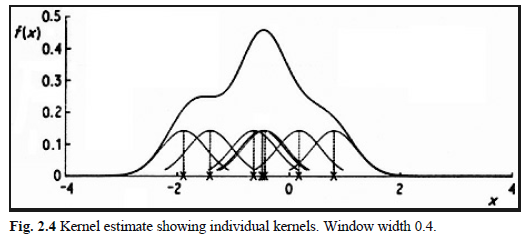
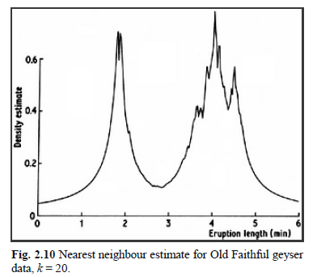

1. INTROUCTION
The probability density function is a fundamental concept in statistics. Consider any random quantity \(X\) that has probability density function \(f\). Specifying the function \(f\) gives a natural description of the distribution of \(X\), and allows probabilities associated with \(X\) to be found from the relation \[P(a<X<b)=\int_{a}^{b}f(d)dx\quad\text{for all } a<b\] Suppose, now, that we have a set of observed data points assumed to be a sample from an unknown probability density function. Density estimation, is the construction of an estimate of the density function from the observed data. The two main aims are to explain
- how to estimate a density from a given data set
- and to explore how density estimates can be used
both in their own right and as an ingredient of other statistical procedures. One approach to density estimation is parametric. Assume that the data are drawn from one of a known parametric family of distributions, for example the normal distribution with mean \(\mu\) and variance \(\sigma^2\). The density \(f\) underlying the data could then be estimated by finding estimates of \(\mu\) and \(\sigma^2\) from the data and substituting these estimates into the formula for the normal density.
In nonparametric estimation, less rigid assumptions will be made about the distribution of the observed data. Although it will be assumed that the distribution has a probability density \(f\), the data will be allowed to speak for themselves in determining the estimate of \(f\) more than would be the case if \(f\) were constrained to fall in a given parametric family.
2. SURVEY OF EXISTING METHODS
2.1 Introduction
2.2. Histograms
The oldest and most widely used density estimator is the histogram. Given an origin \(x_0\) and a bin width \(h\),we definethe bins of the histogram to be the intervals \([x_0 + mh, x_0 +(m +1)h]\) for positive and negative integers \(m\). The intervals have been chosen closed on the left and open on the right for definiteness.
The histogram is then defined by \[\hat{f}(x)=\frac{1}{nh}\times(\text{no. of }X_i\text{ in the same bin as }x)\] Note that, to construct the histogram, we have to choose both an origin and a bin width; it is the choice of bin width which, primarily, controls the amount of smoothing inherent in the procedure.
The histogram can be generalized by allowing the bin widths to vary. Formally, suppose that we have any dissection of the real line into bins; then the estimate will be defined by \[\hat{f}(x)=\frac{1}{n}\times\frac{(\text{no. of }X_i\text{ in the same bin as }x)}{\text{width of bin containing }x}\] The dissection into bins can either be carried out a priori or else in some way which depends on the observations themselves.
The discontinuity of histograms causes extreme difficulty if derivatives of the estimates are required. When density estimates are needed as intermediate components of other methods, the case for using alternatives to histograms is quite strong.
For the presentation and exploration of data, histograms are of course an extremely useful class of density estimates, particularly in the univariate case. However, even in one dimension, the choice of origin can have quite an effect.
Though the histogram remains an excellent tool for data presentation, it is worth at least considering the various alternative density estimates that are available.
2.3. The naive estimator
From the definition of a probability density, if the random variable \(X\) has density \(f\),then \[f(x)=\lim_{h\to0}\frac{1}{2h}P(x-h<X<x+h)\] For any given \(h\), we can of course estimate \(P(x - h < X< x + h)\) by the proportion of the sample falling in the interval \((x - h, x + h)\). Thus a natural estimator of the density is given by choosing a small number \(h\) and setting \[\hat f(x)=\lim_{h\to0}\frac{1}{2hn}\times\lbrace\text{no. of }X_i\text{ falling in the same bin as }(x-h,x+h)\rbrace\] we shall call this the naive estimator.
To express the estimator more transparently, define the weight function \(w\) by \[w(x)=\begin{cases} 1/2, & \text{if }|x|<1 \\ 0, & \text{otherwise} \end{cases} \quad (2.1)\]
Then it is easy to see that the naive estimator can be written \[\hat f(x)=\frac{1}{n}\sum_{i=1}^{n}\frac{1}{h}w\left(\frac{x-X_i}{h}\right)\]
It follows from (2.1) that the estimate is constructed by placing a `box’ of width \(2h\) and height \(\frac{1}{2nh}\) on each observation and then summing to obtain the estimate. We shall return to this interpretation below, but it is instructive first to consider a connection with histograms.
Consider the histogram constructed from the data using bins of width \(2h\). Assume that no observations lie exactly at the edge of a bin. If \(x\) happens to be at the center of one of the histogram bins, it follows at once from (2.1) that the naive estimate \(\hat f(x)\) will be exactly the ordinate of the histogram at \(x\). Thus the naive estimate can be seen to be an attempt to construct a histogram where every point is the center of a sampling interval, thus freeing the histogram from a particular choice of bin positions.
The choice of bin width still remains and is governed by the parameter \(h\), which controls the amount by which the data are smoothed to produce the estimate.
The naive estimator is not wholly satisfactory from the point of view of using density estimates for presentation. It follows from the definition that \(\hat f\) is not a continuous function, but has jumps at the points \(X_i \pm h\) and has zero derivative everywhere else. This gives the estimates a somewhat ragged character which is not only aesthetically undesirable, but, more seriously, could provide the untrained observer with a misleading impression. Partly to overcome this difficulty, and partly for other technical reasons given later, it is of interest to consider the generalization of the naive estimator given in the following section.
2.4. The kernel estimator
It is easy to generalize the naive estimator to overcome some of the difficulties discussed above. Replace the weight function \(w\) by a kernel function \(K\) which satisfies the condition \[\int_{-\infty}^{\infty}K(x)dx=1 \quad (2.2)\]
Usually, but not always, \(K\) will be a symmetric probability density function, the normal density, for instance, or the weight function \(w\) used in the definition of the naive estimator. By analogy with the definition of the naive estimator, the kernel estimator with kernel \(K\) is defined by \[\hat f(x)=\frac{1}{nh}\sum_{i=1}^{n}K\left(\frac{x-X_i}{h}\right)\quad (2.2a)\] where \(h\) is the window width, also called the smoothing parameter or bandwidth by some authors.
Just as the naive estimator can be considered as a sum of boxes centered at the observations, the kernel estimator is a sum of bumps placed at the observations. The kernel function \(K\) determines the shape of the bumps while the window width \(h\) determines their width. 
An illustration is given in Fig. 2.4, where the individual bumps \[\frac{1}{nh} K\left(\frac{x-X_i}{h}\right)\] are shown as well as the estimate constructed by adding them up. It should be stressed that it is not usually appropriate to construct a density estimate from such a small sample, but that a sample of size 7 has been used here for the sake of clarity.
Fig. 2.5
The effect of varying the window width is illustrated in Fig. 2.5. The limit as \(h\) tends to zero is (in a sense) a sum of Dirac delta function spikes at the observations, while as \(h\) becomes large, all detail, spurious or otherwise, is obscured.
Some elementary properties of kernel estimates follow at once from the definition. Provided the kernel \(K\) is everywhere non-negative and satisfies the condition \[\int_{-\infty}^{\infty}K(x)dx=1\] in other words is a probability density function - it will follow at once from the definition that \(\hat f\) will itself be a probability density. Furthermore, \(\hat f\) will inherit all the continuity and differentiability properties of the kernel \(K\), so that if, for example, \(K\) is the normal density function, then \(\hat f\) will be a smooth curve having derivatives of all orders.
2.5. The nearest neighbour method
The nearest neighbour class of estimators represents an attempt to adapt the amount of smoothing to the local density of data. The degree of smoothing is controlled by an integer \(k\), chosen to be considerably smaller than the sample size; typically \(k\approx n^{1/2}\). Define the distance \(d(x, y)\) between two points on the line to be \(|x - y|\) in the usual way, and for each \(t\) define \[d_1(t)\le d_2(t)\le\cdots\le d_n(t)\] to be the distances, arranged in ascending order, from \(t\) to the points of the sample. The \(k\)th nearest neighbour density estimate is then defined by \[\hat f(t)=\frac{k}{2nd_k(t)}\quad (2.3) \]
In order to understand this definition, suppose that the density at \(t\) is \(f(t)\). Then, of a sample of size \(n\), one would expect about \(2rnf(t)\) observations to fall in the interval \[[t - r, t + r] \text{ for each } r > 0\] Since, by definition, exactly \(k\) observations fall in the interval \([t - d_k(t), t + d_k(t)]\), an estimate of the density at \(t\) may be obtained by putting \[k=2d_k(t)n\hat f(t)\] this can be rearranged to give the definition of the \(k\)th nearest neighbour estimate.
While the naive estimator is based on the number of observations falling in a box of fixed width centred at the point of interest, the nearest neighbour estimate is inversely proportional to the size of the box needed to contain a given number of observations. In the tails of the distribution, the distance \(d_k(t)\) will be larger than in the main part of the distribution, and so the problem of undersmoothing in the tails should be reduced.
Like the naive estimator, to which it is related, the nearest choice neighbour estimate as defined in (2.3) is not a smooth curve. The function \(d_k(t)\) can easily be seen to be continuous, but its derivative will have a discontinuity at every point of the form \[\frac{1}{2}(X_{(j)} + X_{(j+k)})\], where \(X_{(j)}\) are the order statistics of the sample.
In statistics, the \(k\)th order statistic of a statistical sample is equal to its kth-smallest value. Together with rank statistics, order statistics are among the most fundamental tools in non-parametric statistics and inference. Important special cases of the order statistics are the minimum and maximum value of a sample, and the sample median and other sample quantiles. When using probability theory to analyze order statistics of random samples from a continuous distribution, the cumulative distribution function is used to reduce the analysis to the case of order statistics of the uniform distribution. https://www.wikiwand.com/en/Order_statistic
It follows at once from these remarks and from the definition that \(\hat f\) will be positive and continuous everywhere, but will have discontinuous derivative at all the same points as \(d_k\). In contrast to the kernel estimate, the nearest neighbour estimate will not itself be a probability density, since it will not integrate to unity. For \(t\) less than the smallest data point, we will have \(d_k(t)= X_{(n-k+1)}\) and for \(t > X_{(n)}\) we will have \(d_k(t)= t - X_{(n-k+1)}\). Substituting into (2.3), it follows that \(\int_{-\infty}^{\infty}(t)dt\) is infinite and that the tails of \(\hat f\) die away at rate \(t^{-1}\), in other words extremely slowly.

Thus the nearest neighbour estimate is unlikely to be appropriate if an estimate of the entire density is required. Figure 2.10 gives a nearest neighbour density estimate for the Old Faithful data. The heavy tails and the discontinuities in the derivative are clear.
It is possible to generalize the nearest neighbour estimate to provide an estimate related to the kernel estimate. As in Section 2.4, let \(K(x)\) be a kernel function integrating to one. Then the generalized \(k\)th nearest neighbour estimate is defined by \[\hat f(t)=\frac{1}{nd_k(t)}\sum_{i=1}^{n}K\left(\frac{t-X_i}{d_k(t)}\right)\quad (2.4)\] It can be seen at once that \(\hat f(t)\) is precisely the kernel estimate evaluated at \(t\) with window width \(d_k(t)\). Thus the overall amount of smoothing is governed by the choice of the integer \(k\), but the window width used at any particular point depends on the density of observations near that point.
The ordinary \(k\)th nearest neighbour estimate is the special case of (2.4) when \(K\) is the uniform kernel \(w\) of \[w(x)=\begin{cases} 1/2, & \text{if }|x|<1 \\ 0, & \text{otherwise} \end{cases} \quad (2.1)\] thus (2.4) stands in the to same relation to (2.3) as the kernel estimator does to the naive ed. estimator. However, the derivative of the generalized nearest neighbour estimate will be discontinuous at all the points where the function \(d_k(t)\) has discontinuous derivative. The precise integrability and tail properties will depend on the exact form of the kernel.
2.6. The variable kernel method
The variable kernel method is somewhat related to the nearest neighbour approach and is another method which adapts the amount of smoothing to the local density of data. The estimate is constructed similarly to the classical kernel estimate, but the scale parameter of the bumps placed on the data points is allowed to vary from one data point to another.
Let \(K\) be a kernel function and \(k\) a positive integer. Define \(d_{j, k}\) to be the distance from \(X_j\) to the \(k\)th nearest point in the set comprising the other \(n - 1\) data points. Then the variable kernel estimate with smoothing parameter \(h\) is defined by \[\hat f(t)=\frac{1}{n}\sum_{j=1}^{n}\frac{1}{hd_{j,k}}K\left(\frac{t-X_j}{hd_{j,k}}\right)\quad (2.5)\]
The window width of the kernel placed on the point \(X_j\) is proportional to \(d_{j, k}\), so that data points in regions where the data are sparse will have flatter kernels associated with them. For any fixed \(k\), the overall degree of smoothing will depend on the parameter \(h\). The choice of \(k\) determines how responsive the window width choice will be to very local detail.
Some comparison of the variable kernel estimate with the generalized nearest neighbour estimate \[\hat f(t)=\frac{1}{nd_k(t)}\sum_{i=1}^{n}K\left(\frac{t-X_i}{d_k(t)}\right)\quad (2.4)\] may be instructive. In (2.4) the window width used to construct the estimate at \(t\) depends on the distances from \(t\) to the data points; in (2.5) the window widths are independent of the point \(t\) at which the density is being estimated, and depend only on the distances between the data points.
In contrast with the generalized nearest neighbour estimate, the variable kernel estimate will itself be a probability density function provided the kernel \(K\) is; that is an immediate consequence of the definition. Furthermore, as with the ordinary kernel estimator, all the local smoothness properties of the kernel will be inherited by the estimate.
2.7. Orthogonal series estimators
Orthogonal series estimators approach the density estimation problem from quite a different point of view. They are best explained by a specific example. Suppose that we are trying to estimate a density \(f\) on the unit interval \([0, 1]\). The idea of the orthogonal series method is then to estimate \(f\) by estimating the coefficients of its Fourier expansion.
Define the sequence \(\phi_{V}(x)\) by \[\begin{align} \left. \begin{array}{l} \phi_0(x)&=1\\ \phi_{2r-1}(x)&=\sqrt{2}\cos2\pi rx\\ \phi_{2r}(x)&=\sqrt{2}\sin2\pi rx\\ \end{array} \right\} r=1,2,\cdots \end{align}\] Then, by standard mathematical analysis, \(f\) can be represented as the Fourier series \[\sum_{v=0}^{\infty}f_v\phi_V\], where, for each \(V\ge 0\), \[f_v=\int_{0}^{1}f(x)\phi_v(x)dx\quad (2.6)\]
Suppose \(X\) is a random variable with density \(f\). Then \[f_v=\int_{0}^{1}f(x)\phi_v(x)dx\quad (2.6)\] can be written \[f_V=E\phi_V(X)\] and hence a natural, and unbiased, estimator of \(f\) based on a sample \(X_1,\cdots, X_n\) from \(f\) is \[\hat f_v=\frac{1}{n}\sum_{i=1}^{n}\phi_v(X_i)\] Unfortunately, the \(sum = 0\) will not be a good estimate of \(f\), but will converge to a sum of delta functions at the observations; to see this, let \[w(x)=\frac{1}{n}\sum_{i=1}^{n}\delta(x-X_i)\quad (2.7)\]
where \(\delta\) is the Dirac delta function. Then, for each \(V\), \[\hat f_V=\int_{0}^{1}w(x)\phi_v(x)dx\] and so the \(\hat f_V\) are exactly the Fourier coefficients of the function \(w\).
In order to obtain a useful estimate of the density \(f\), it is necessary to smooth \(w\) by applying a low-pass filter to the sequence of coefficients \(\hat f_v\). The easiest way to do this is to truncate the expansion \(\sum \hat f_v\phi_v\) at some point. Choose an integer \(K\) and define the density estimate \(\hat f\) by \[\hat f(x)=\sum_{v=0}^{K}\hat f_v\phi_v(x)\quad (2.8)\]
The choice of the cutoff point \(K\) determines the amount of smoothing.
A more general approach is to taper the series by a sequence of weights \(\lambda_v\), which satisfy \(\lambda_v\to 0\) as \(v\to\infty\), to obtain the estimate \[\hat f(x)=\sum_{v=0}^{\infty}\lambda_v\hat f_v\phi_v(x)\] The rate at which the weights \(\lambda_v\) converge to zero will determine the amount of smoothing.
Other orthogonal series estimates, no longer necessarily confined to data lying on a finite interval, can be obtained by using different orthonormal sequences of functions. Suppose \(a(x)\) is a weighting function and \((\psi_v)\) is a series satisfying, for \(\mu\) and \(v\ge 0\), \[\int_{-\infty}^{\infty}\psi_{\mu}(x)\psi_{v}(x)a(x)dx=\begin{cases} 1, & \mu=v \\ 0, & \text{otherwise} \end{cases}\]
For instance, for data resealed to have zero mean and unit variance, \(a(x)\) might be the function \(e^{-x2/2}\) and the \(\psi_v\) multiples of the Hermite polynomials.
The sample coefficients will then be defined by \[\hat f_v=\frac{1}{n}\sum_{i}\psi_v(X_i)a(X_i) \] but otherwise the estimates will be defined as above; possible estimates are \[\hat f(x)=\sum_{v=0}^{K}\hat f_v\psi_v(x)\quad (2.9)\] or \[\hat f(x)=\sum_{v=0}^{K}\lambda_v\hat f_v\psi_v(x)\quad (2.10)\]
The properties of estimates obtained by the orthogonal series method depend on the details of the series being used and on the system of weights. The Fourier series estimates will integrate to unity, provided \(\lambda_0 =1\), since \[\int_{0}^{1}\phi_v(x)dx=0\quad\text{for all } v>0\] and \(\hat f_0\) will always be equal to one. However, except for rather special choices of the weights \(\lambda_v\), \(\hat f\) cannot be guaranteed to be non-negative. The local smoothness properties of the estimates will again depend on the particular case; estimates obtained from \[\hat f(x)=\sum_{v=0}^{K}\hat f_v\phi_v(x)\quad (2.8)\] will have derivatives of all orders.
2.8. Maximum penalized likelihood estimators
The methods discussed so far are all derived in an ad hoc way from the definition of a density. It is interesting to ask whether it is possible to apply standard statistical techniques, like maximum likelihood, to density estimation. The likelihood of a curve \(g\) as density underlying a set of independent identically distributed observations is given by \[L(g|X_1,\cdots,X_n)=\prod_{i=1}^{n}g(X_i)\] This likelihood has no finite maximum over the class of all densities. To see this, let \(\hat f\) be the naive density estimate with window width $ h$; then, for each \(i\), \[\hat f_h(X_i)\ge\frac{1}{nh}\] and so \[\prod \hat f_h(X_i)\ge n^{-n}h^{-n}\to\infty\quad \text{as }h\to 0\]
Thus the likelihood can be made arbitrarily large by taking densities approaching the sum of delta functions \(w\) as defined in \[w(x)=\frac{1}{n}\sum_{i=1}^{n}\delta(x-X_i)\quad (2.7)\] above, and it is not possible to use maximum likelihood directly for density estimation without placing restrictions on the class of densities over which the likelihood is to be maximized.
There are, nevertheless, possible approaches related to maximum likelihood. One method is to incorporate into the likelihood a term which describes the roughness - in some sense - of the curve under consideration. Suppose \(R(g)\) is a functional which quantifies the roughness of \(g\). One possible choice of such a functional is \[R(g)=\int_{-\infty}^{\infty}(g'')^2\quad (2.11)\]
Define the penalized log likelihood by \[l_{\alpha}(g)=\sum_{i=1}^{n}\log(X_i)-\alpha R(g)\quad (2.12)\] where \(\alpha\) is a positive smoothing parameter.
The penalized log likelihood can be seen as a way of quantifying the conflict between smoothness and goodness-of-fit to the data, since the log likelihood term \(\sum\log g(X_i)\) measures how well \(g\) fits the data. The probability density function \(\hat f\) is said to be a maximum penalized likelihood density estimate if it maximizes \(l_{\alpha}(g)\) over the class of all curves \(g\) which satisfy \(\int_{-\infty}^{\infty}g =1\), \(g(x)\ge 0\) for all \(x\),and \(R(g) < \infty\). The parameter \(\alpha\) controls the amount of smoothing since it determines the rate of exchange between smoothness and goodness-of-fit; the smaller the value of \(\alpha\), the rougher - in terms of \(R(\hat f)\) - will be the corresponding maximum penalized likelihood estimator. Estimates obtained by the maximum penalized likelihood method will, by definition, be probability densities.
2.9. General weight function estimators
It is possible to define a general class of density estimators which includes several of the estimators discussed above. Suppose that \(w(x, y)\) is a function of two arguments, which in most cases will satisfy the conditions \[\int_{-\infty}^{\infty}w(x, y)dy=1\quad (2.13)\] and \[w(x, y)\ge0\quad \text{for all }x \text{ and }y\quad (2.14)\] We should think of \(w\) as being defined in such a way that most of the weight of the probability density \(w(x, \cdot)\) falls near \(x\). An estimate of the density underlying the data may be obtained by putting \[\hat f(t)=\frac{1}{n}\sum_{i=1}^{n}w(X_i,t)\quad (2.15)\]
We shall refer to estimates of the form (2.15) as general weight function estimates. It is clear from (2.15) that the conditions (2.13) and (2.14) will be sufficient to ensure that \(\hat f\) is a probability density function, and that the smoothness properties of \(\hat f\) will be inherited from those of the functions \(w(x,\cdot)\). This class of estimators can be thought of in two ways. Firstly, it is a unifying concept which makes it possible, for example, to obtain theoretical results applicable to a whole range of apparently distinct estimators. On the other hand, it is possible to define useful estimators which do not fall into any of the classes discussed in previous sections but which are nevertheless of the form (2.15).